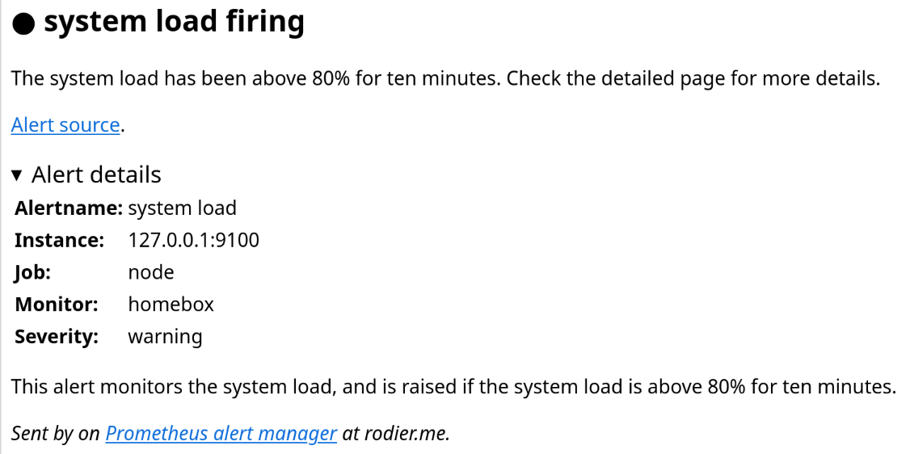
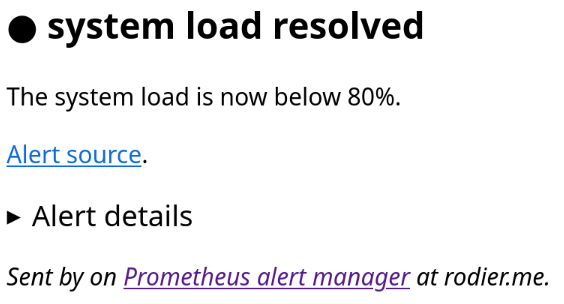

Monitoring
Monitoring and alerting is done using the standard Grafana and Prometheus software. Alerts are sent both using Jabber and Emails, to an internal or an external email address.
Email alert raising

Email alert resolved

Thread of email alerts